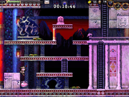

La-Mulana
Dieser Artikel wurde für die folgenden Ubuntu-Versionen getestet:
Ubuntu 14.04 Trusty Tahr
Zum Verständnis dieses Artikels sind folgende Seiten hilfreich:
Erkunde als Professor Lemeza die uralten Ruinen von La-Mulana, entschärfe Fallen und besiege mystische Ungeheuer auf deiner Suche nach den Wurzeln aller menschlichen Zivilisation ...
La-Mulana  ist ein modernes Adventure im Stil klassischer "Metroidvania"-Spiele
ist ein modernes Adventure im Stil klassischer "Metroidvania"-Spiele  und zugleich das offizielle Remake des 8-Bit-Spiels gleichen Namens. Das Spiel ist besonders seiner herausfordernden Rätsel wegen berüchtigt und bietet selbst erfahrenen Rätselfreunden zwischen 20 bis 50 Stunden Spielspaß.
und zugleich das offizielle Remake des 8-Bit-Spiels gleichen Namens. Das Spiel ist besonders seiner herausfordernden Rätsel wegen berüchtigt und bietet selbst erfahrenen Rätselfreunden zwischen 20 bis 50 Stunden Spielspaß.
|  | ||
| Knifflige Rätsel, ... | ... aufregende Bosskämpfe ... | ... und natürlich Leitern und Plattformen! |
Vorbereitung¶
Da La-Mulana für Windows programmiert wurde, muss Wine installiert sein. Leider funktioniert unter Linux die Tastatursteuerung nicht - das Spiel kann daher ausschließlich mit einem Controller mit mindestens acht Tasten, besser jedoch zwölf und im Idealfall vierzehn Tasten bedient werden. Denn insgesamt gibt es vierzehn Aktionen, denen eine Taste zugewiesen werden kann - allerdings können manche Tasten für verschiedene Kontexte doppelt belegt werden.
Installation¶
Zunächst benötigt das Spiel die nativen DirectX-Bibliotheken, die sich mithilfe von winetricks leicht im Terminal [1] nachinstallieren lassen:
winetricks dxfullsetup
Nun installiert man das Spiel selbst und gegebenenfalls Patches mithilfe von Wine - sei es über einen Linksklick  auf die Setup-Datei oder über das Terminal (Beispiel für die GOG.com-Version samt Installation des Patches):
auf die Setup-Datei oder über das Terminal (Beispiel für die GOG.com-Version samt Installation des Patches):
wine start /Unix setup_la-mulana_2.0.0.7.exe wine start /Unix patch_la-mulana_2.0.2.9.exe
Korrekte Tastenbelegung¶
Zwar kann das Spiel nun bereits gestartet werden, doch in der Regel werden die Controller-Tasten nicht automatisch erkannt. Einerseits lassen sich die Controller-Tasten den einzelnen Spielfunktionen innerhalb des Spiels in einem Menü zuordnen, doch andererseits werden die zur Menü-Navigation notwendigen Tasten ebenfalls nicht alle erkannt. Dieser Fehler kann jedoch schnell behoben werden, indem man in einem ersten Schritt das Spiel startet, wodurch die Binärdatei ~/NIGORO/La-Mulana/save/lamu.dat automatisch angelegt wird, das Spiel wieder beendet und diese Datei in einem zweiten Schritt verändert und die Tasten darin manuell zuweist. Die folgenden Befehle sichern diese Datei zunächst und weisen anschließend den Tasten 1 und 2 des Controllers die Funktionen "Select" bzw. "Cancel" zu:
cd ~/NIGORO/La-Mulana/save cp lamu.dat lamu.dat-backup printf '\x00\x01' | dd of=lamu.dat bs=1 seek=12 count=2 conv=notrunc
Die restlichen Tasten lassen sich nun, da die "Select", "Cancel" und die Richtungstasten zur Verfügung stehen, bequem innerhalb des Spiels zuweisen. Die konkreten Zuweisungen hängen dabei natürlich von der Art des Controllers ab. Eine mögliche vollständige Tastenbelegung für einen Dual-Shock- oder vergleichbaren Controller könnte mit folgendem Befehl erreicht werden:
printf '\x01\x02\x00\x03\x01\x02\xff\xff\x09\x08\x04\x06\x05\x07\xff\xff\x06\x07\xff\xff\xff\xff\x08' | dd of=lamu.dat bs=1 seek=8 count=23 conv=notrunc


- Erstellt mit Inyoka
-
 2004 – 2017 ubuntuusers.de • Einige Rechte vorbehalten
2004 – 2017 ubuntuusers.de • Einige Rechte vorbehalten
Lizenz • Kontakt • Datenschutz • Impressum • Serverstatus -
Serverhousing gespendet von